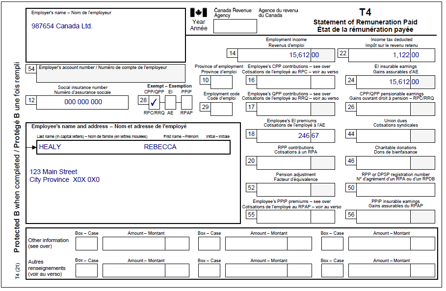
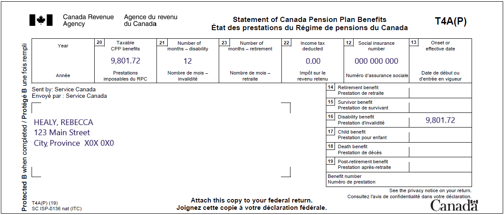
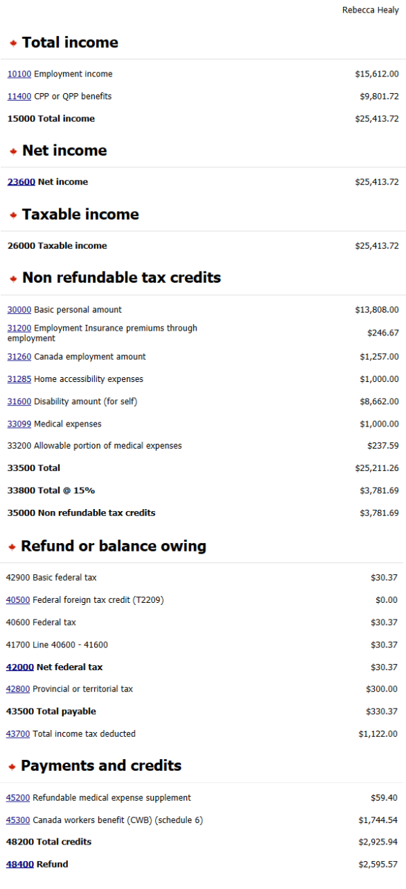

Claiming the disability tax credit and caregiver amount for a dependant
Pre-test question
That's correct
An individual cannot claim the disability amount transferred from a dependant for a child for whom they had to pay child support. However, if someone was separated from their spouse or common-law partner for only part of the year because of a breakdown in the relationship, special rules may apply.
Sorry, that's incorrect
An individual cannot claim the disability amount transferred from a dependant for a child for whom they had to pay child support. However, if someone was separated from their spouse or common-law partner for only part of the year because of a breakdown in the relationship, special rules may apply.
Instructions
- Open the UFile CVITP software
- Review the background information and slips required (tax slips, receipts, etc.)
- Enter all the necessary information into the required sections of UFile
- Once completed, compare your results with the solution provided
- Check out the takeaway points at the end
Background information
Situation
Rebecca receives the CPP disability benefit and works part-time. On December 1, 2022, she had her bathroom modified to make it accessible. The cost was $1,000. Rebecca has previously been approved for the disability tax credit (DTC). She wants to claim the DTC and the cost of the bathroom renovation on her tax return. She has a prescription from her doctor for the bathroom modification.
Identification information
| Name | Pierre Knowlton |
|---|---|
| Social insurance number (SIN) | 000 000 000 |
| Address | 123 Main Street City, Province X0X 0X0 |
| Date of birth | March 8, 1960 |
| Marital status | Divorced |
Slips required
T4 – Statement of Remuneration Paid (987654 Canada Ltd.)
Text version
T4 – Statement of Remuneration Paid
Protected B
Employer’s name: 987654 Canada Ltd.
Employee’s name and address:
Last name: Healy
First name: Rebecca
123 Main Street
City, Province X0X 0X0
Box 12: Social insurance number: 000 000 000
Box 14: Employment income: 15,612.00
Box 18: Employee’s EI premiums: 246.67
Box 22: Income tax deducted: 1,122.00
Box 24: EI insurable earnings: 15,612.00
Box 28: Exempt CPP/QPP is checked
T4A(P) – Statement of Canada Pension Plan Benefits
Text version
T4A(P) – Statement of Canada Pension Plan Benefits
Protected B
Sent by: Service Canada
Healy, Rebecca
123 Main Street
City, Province X0X 0X0
Box 12: Social insurance number: 000 000 000
Box 20: Taxable CPP benefits: 9,801.72
Box 21: Number of months – disability: 12
Box 22: Income tax deducted: 0.00
Box 16: Disability benefit: 9,801.72
Review your results
Text version
Rebecca Healy
Total income
10100 Employment income: $15,612.00
11400 CPP or QPP benefits: $9,801.72
15000 Total income: $25,413.72
Net income
23600 Net income: $25,413.72
Taxable income
26000 Taxable income: $25,413.72
Non-refundable tax credits
30000 Basic personal amount: $13,808.00
31200 Employment insurance premiums through employment: $246.67
31260 Canada employment amount: $1,257.00
31285 Home accessibility expenses: $1,000.00
31600 Disability amount (for self): $8,662.00
33099 Medical expenses: $1,000.00
33200 Allowable portion of medical expenses: $237.59
33500 Total: $25,211.26
33800 Total @ 15%: $3,781.69
35000 Non-refundable tax credits: $3,781.69
Refund or balance owing
42900 Basic federal tax: $30.37
40500 Federal foreign tax credit (T2209): $0.00
40600 Federal tax: $30.37
41700 Line 40600 – 41600: $30.37
42000 Net federal tax: $30.37
42800 Provincial or territorial tax: $300.00
43500 Total payable: $330.37
43700 Total income tax deducted: $1,122.00
Payments and credits
45200 Refundable medical expense supplement: $59.40
45300 Canada workers benefit (CWB) (schedule 6): $1,744.54
48200 Total credits: $2,925.94
48400 Refund: $2,595.57
Takeaway points
Steps to follow
- Review their background information and the required slips
- From the Interview setup, in the Employment income and other benefits section, check the box next to Employment income and employment insurance benefits (T4, T4E/RL-6). In the Pension section check the box next to Pension income, other income and split pension income, COVID-19 benefits (T4A, T4A(OAS), T4A(P), T4A-RCA,T4RSP, T4RIF, T1032) and in the Common tax deductions section check the box next to Medical expenses, disability, caregiver
- Select T4 and employment income from the left side menu, add the T4 tax slip and enter the information from the tax slip; afterwards, select T4A and pension income from the left side menu, add the T4A(P) and enter the information from the tax slip
- Select Medical, disability, caregiver from the left side menu, and in the Disability deductions, caregiver section, click the + sign next to Infirmity and Disability amounts claim for yourself* (line 31600)
- Enter the applicable information in Name or description of infirmity and answer the question Are you eligible for the disability amount on federal line 31600? by selecting Claim disability amount (default) from the drop-down menu. Answer the question Does this infirmity provide entitlement to the Canada caregiver amount? using the drop-down menu
- Select Medical, disability, caregiver from the left side menu, and in the Disability deductions, caregiver section, click + sign next to Home accessibility expenses (line 31285)
- For the field Select how you want to claim the Federal Home Accessibility Expenses credit, select Let MaxBack decide (default) from the drop-down menu, then complete the Home renovation expenses section